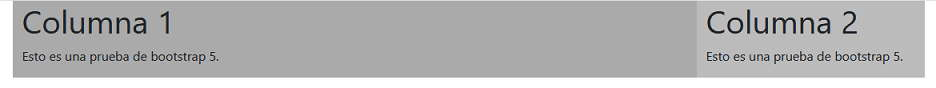
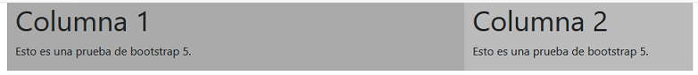
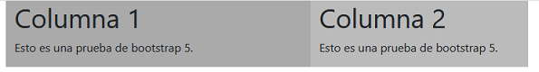
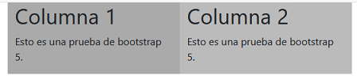
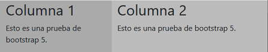

Si queremos que una página se muestre de forma diferente si la accedemos desde un dispositivo con pantalla muy muy grande, muy grande, grande, mediana, pequeña o muy pequeña podemos asignar múltiples reglas a cada columna.
Implementemos una página que muestre los datos en dos columnas y el ancho de las columnas dependa de la pantalla del dispositivo:
1er columna 2da columna
Pantalla muy,muy grande: 10 unidades 2 unidades
Pantalla muy grande: 9 unidades 3 unidades
Pantalla grande: 8 unidades 4 unidades
Pantalla mediana: 7 unidades 5 unidades
Pantalla chica: 6 unidades 6 unidades
Pantalla muy chica: 5 unidades 7 unidades
Luego el código de la página queda definido:
<!doctype html>
<html>
<head>
<title>Prueba de Bootstrap 5</title>
<meta charset="utf-8">
<meta name="viewport" content="width=device-width, initial-scale=1, shrink-to-fit=no">
<link href="https://cdn.jsdelivr.net/npm/bootstrap@5.0.0/dist/css/bootstrap.min.css" rel="stylesheet" integrity="sha384-wEmeIV1mKuiNpC+IOBjI7aAzPcEZeedi5yW5f2yOq55WWLwNGmvvx4Um1vskeMj0" crossorigin="anonymous">
</head>
<body>
<div class="container">
<div class="row">
<div class="col-xxl-10 col-xl-9 col-lg-8 col-md-7 col-sm-6 col-5" style="background-color:#aaa">
<h1>Columna 1</h1>
<p>Esto es una prueba de bootstrap 5.</p>
</div>
<div class="col-xxl-2 col-xl-3 col-lg-4 col-md-5 col-sm-6 col-7" style="background-color:#bbb">
<h1>Columna 2</h1>
<p>Esto es una prueba de bootstrap 5.</p>
</div>
</div>
</div>
</body>
</html>
Es decir podemos asignar múltiples reglas a un div de una columna, actuará el que corresponde dependiendo del ancho del dispositivo. Por ejemplo si ejecutamos y comenzamos a reducir el ancho del navegador podremos ver como se redimensionan los anchos de las columnas a medida que reducimos el ancho del navegador.
En un dispositivo muy, muy grande >=1400:
En un dispositivo muy grande >=1200:

En un dispositivo grande >=992:

En un dispositivo mediano >=768:

En un dispositivo pequeño >=576:

Y en un dispositivo muy pequeño <=576:

En este caso tengamos en cuenta que nunca colapsan las columnas ya que hemos definido la regla col-*
La definición de múltiples reglas es una de las herramientas más poderosas de Bootstrap, nos permite definir distintos diseños de página según las capacidades del dispositivo del visitante a nuestro sitio web.